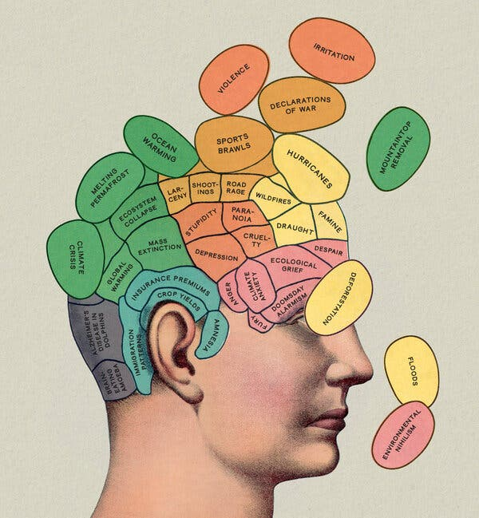

After the long break, I have accumulated a number of leads for new installments, many from the pages of The Old Gray Lady, the New York Times. The inspiration for this one came recently from the May 12, 2024, Book Review, which featured, on its cover, the review of an allegedly non-fiction book entitled “The Weight of Nature” by Clayton Page Aldern. The cover included the following graphic, titled “Climate Change on the Mind”:

Mr. Aldern’s online biography lists an impressive number of awards, including a Rhodes Scholarship that supported two Master’s Degrees from Oxford, one in neuroscience and one in public policy. That fact, for me, is actually a bit of a red flag since a Master’s Degree in the Sciences is generally followed by a doctoral degree that provides training in independent thought and cohesive argumentation. But, as I’ve discovered, writing about science, particularly when covering a topic as fraught as climate change, is no easy task.
So, what is Mr. Aldern writing about? The subtitle gives a hint, “How a Changing Climate Changes our Brains.” My first thought was, “Well, that’s a stretch! I seriously doubt a true cause-and-effect, and I don’t know how you could establish one with any degree of certainty!” But let’s grant him the benefit of the doubt. What’s the thrust of the book?
In the words of the author:
This is a book about…the ways in which the natural world tugs and prods at the decisions you make; how it twists and folds your memories and mental states; how this nebulous everywhere we call the environment tips your interior scales. Sometimes these nudges are benign: You snap at your mother on the phone because surely you have had this conversation before, and right now it is 95 degrees Fahrenheit (35°C) and your patience has run dry. Or maybe it's the air quality that's off-kilter today-there's that wildfire across the state, after all—and you have an absolute whopper of a headache, and you simply cannot focus enough to remember if your partner's birthday is January 5 or January 6. You should absolutely know the answer to this question. Is it really the same day as the Capitol Hill riot? That seems too on the nose.
The author’s astute scientific observation is that the environment affects our brains. I sure hope so! Indeed, the absence of such an effect is a recognized mental illness called “ depersonalization disorder .” Our brains are arguably the most environmentally adaptive organs ever created. They are the very organ that has allowed humans to dominate every climate zone on the planet. I firmly believe that continuing to use the brain’s logical capabilities is our only path to redemption! But continuing to stoke fear in the brain’s emotional side, in contrast, can lead to learned helplessness.
So, is there anything to be worried about here? Let’s enumerate the claims cited in the book review and see if any are worth examining further. According to the reviewer, Nathaniel Rich, each of these claims is supported by a scientific publication, presumably peer-reviewed and ideally widely accepted by the scientific community. Sadly, I’ve found that they are not. I’ve quickly fact-checked them in the notes below, but it’s selection bias at its worst. Here’s an enumeration:
-
Naegleria fowleri , the brain-eating amoeba, has begun infecting swimmers in lakes as far north as Iowa and Minnesota and may already be present in all freshwater as lakes and ponds warm. [In 2022, there were a total of three (3) cases in the US. So, it’s a few swimmers at most.]
-
As landscapes reconfigure and cultural practices vanish, the mind becomes less able to retain information, which Aldern translates as: “Climate change causes amnesia.” [ This article suggests that the condition “transient global amnesia” is correlated with lower temperatures rather than higher ones. In any event, the condition is exceedingly rare .]
-
In hotter climates, a high school student’s chance of graduating on time decreases by a percentage point for every extra degree Fahrenheit on the day of a final exam. [This is well substantiated, but the effect is small, and a neurological basis is highly unlikely. Mammals are warm-blooded, meaning that their internal temperature doesn’t vary with the environment! Dehydration is my bet.]
-
On warmer days, immigration judges more frequently rule against asylum applicants. [Interesting correlation, but this article suggests a different explanation: Warmer days are more frequent near the southern border of the US, and judges at the border are more likely to rule against asylum seekers.]
-
When it’s hotter than 100 degrees, one-third of drivers honk more often and for longer. [I think this is a reference to this 1984 study , which found that drivers in Phoenix with their windows rolled down tended to exhibit more aggressive behavior. It’s a psychology experiment with no neuroscience explanation. People get pissy when it’s hot, especially when the a-hole in front of you doesn’t move when the light turns green. Is that neurological damage because of climate change, or is it just that drivers are more anxious to get into an air-conditioned space?]
-
Heat exposure during early pregnancy is associated with a higher risk of conditions like schizophrenia and anorexia. {That’s probably a reference to this study that has yet to be peer-reviewed. The authors state, “The outcomes associated with increasing heat exposure highlight the economic cost of global warming; establishing estimates for this are beyond the scope of this research but would provide a valuable area for future research.” This is another red flag!! More later.]
-
Dolphins appear to be getting Alzheimer’s disease. [This appears to be a consequence of post-fertility longevity instead of climate change, as per this article . While interesting, it’s simply the case that dolphins of many species live longer than most other mammals.]
-
Mountaintop removal makes residents of Appalachia depressed. [This is an alleged example of “solastalgia” (eco-anxiety), a new psychological condition I’ve covered before 1 . There is, of course, no direct cause-and-effect between strip mining and depression. It’s a statistical correlation based on a psychological test. Even the authors of the study conclude,
“Although the causal relationships in the case of depression and illness in MTR {mountain-top removal} areas are unclear, it seems likely that depression is both a result of and a contributor to the high prevalence of other forms of disease observed in MTR communities.”
It’s a basic tenet of science that correlation does not imply causation, even when the research is published in a peer-reviewed journal; This is the authors’ opinion.]
-
In Greenland, mercury, a neurotoxin, is leaking from melting permafrost “like some kind of cartoonish sludge zombie.” [Speaking as a chemist, the concerning compounds are actually organic mercury compounds that accumulate in seafood, thereby entering the human food chain. The amount of mercury in permafrost is about twice as much as in temperate soil , but it’s still only 0.000005%, so it’s more of a phantom than a zombie. It’s worth measuring but not worth losing sleep over.]
-
Florida will soon be swarmed by rabid vampire bats. [Vampire bats don’t swarm. They’re already in Mexico, where they primarily affect livestock—and their presence doesn’t exactly limit tourism as much as, say, the cartels. Plus, vampire bats don’t fly over water , so they are more likely to show up in Texas than in Florida!]
Now, do you see why this book should be classified as “science fiction”? It’s like The Andromeda Strain meets Jurassic Park . At least Michael Crichton never claimed his books (generally based on science gone awry) were based on scientifically proven facts. Plus, Crichton actually earned his MD before writing about the consequences of extraterrestrial pathogens or bringing dinosaurs back to life!
If he continues to parrot environmental conspiracy theories by selecting (and failing to critically evaluate) only publications that support them, Mr. Aldern would be well advised to remove the “scientist” and probably the “journalist” parts of his resume.
I conclude, in contrast, that abundant funding for scientific research related to climate change has biased the science literature in favor of attributing effects to changes in temperature. Specifically, if I’d been funded for any of these studies and concluded that there was, in fact, no effect, my paper would have been rejected, either because of the multitude of malpractices that lead to inconclusive results, or simply because the findings contradicted popular opinion.
As I wrote earlier:
While deaths reported to be attributed to “extreme heat” are increasing, water-related events dominate, accounting for nearly 90% of fatalities from natural disasters. Indeed, one of the most significant natural disasters was a five-month-long flood in China (1931), which killed 3-4 million people. To make matters worse, it was preceded by a prolonged drought (1928-1930), followed by a cholera epidemic (1932) and the rise of the Chinese Communist Party (1941-1945). I don’t doubt that the environmental pressures supported a political movement toward a totalitarian state.
Thank you for reading Healing the Earth with Technology. This post is public so feel free to share it.
[See earlier posts in this series]